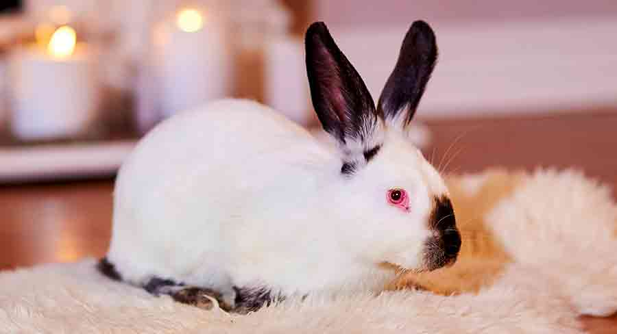

Походження
Для первісного розведення кроликів каліфорнійської породи створюємо сім'ю. Беремо тварин різних ліній, тобто. кролики не перебувають між собою у родинних зв'язках. Співвідношення самок та самців у сім'ї 1 до 5, і іноді 1 до 10, виходить на одного самця п'ять чи десять самок. У середньому від такої сім'ї на рік отримуємо до 4-5 окролів. Якщо збільшувати кількість спарювань та окролів однієї самки, тривалість її життя скорочується. У п'ятимісячному віці самок допускають до спарювання самців у шість місяців. У випадку самки вступають легко. За один окрол самка приносить 8 - 12 кроленят, добре всіх вирощує. Самки цієї породи мають прекрасні материнські якості і відрізняються високою молочністю.
Кількість кроленят у гнізді можна регулювати. Наприклад, якщо в однієї самки 12 в інший 6, можна перекласти кроленят.
Гніздо каліфорнійського кролика
Самок бажано не перегодовувати, кролиці, що зажиріли, не придатні для розведення нового потомства. Крольчата каліфорнійського кролика при народженні, як правило, досягають 45 грам, відрізняються високою енергією росту. У віці двох місяців досягають 1,5 до 1.8 кг, а у трьох місячному вже близько 2,5 кг, до п'яти місяців зростання 3,5 кг. Після цього віку інтенсивність зростання різко знижується.
Особистість
Кролик каліфорнійський середніх розмірів за величиною, середня вага дорослого кролика 4,5 кг. Стандартне забарвлення каліфорнійця чисто біле. Вуха, ніс, лапки, хвіст від темно-коричневого до чорного кольору. У кроликів з гарним родоводом забарвлення плям чітке і рівне. Конституція міцна, кістяк тонкий та легкий, проте дуже міцний. Голова не велика з тонкими короткими вухами, що не перевищують 10,5 см. Тулуб короткий, збитий, пропорційно розвинений. Шия коротка, добре розвинений поперековий крижовий відділ, округлий зад. Колір очей від світло-рожевого до червоного. Лапи короткі, товсті, добре опушені, підгрудки відсутні.
Здоров'я
Проживаю 12-15 років, Годувати кроликів треба досхочу. Раціон харчування має бути з високим вмістом протеїну (білка). Крім гранульованого повноцінного комбікорму та сіна допускається вводити в раціон харчування тварин рибне та м'ясо-кісткове борошно, хлібні сухарі, у літній період трав'яні корми. Причому все це має бути гарної якості – не підгнилий і не підморожений без цвілі та прогорклості, кролики каліфорнійської породи болісно реагують на зміну кормів. Годуючим самкам в раціон додавати соковиті корми - буряк, морква, капуста. Для хорошого травлення можна використати пробіотик (целобактерин). Постійний доступ до води, вода має бути чистою та свіжою. Взимку вода має бути теплою.
Грумінг
Каліфорнійські кролики досить невибагливі до утримання у наших кліматичних умовах. Добре переносять холод та спеку. Оптимальний варіант утримання цієї породи – клітинний, племінних робочих самок найкраще тримати у закритих приміщеннях. Приміщення має бути світлим, постійне добове освітлення, помірна температура повітря, бажано мати витяжку, встановлювати приблизно 70 см від підлоги. Великий плюс при утриманні, не потрібні великі клітини, самі по собі каліфорнійські кролики не великі, цілком задовольняються невеликими клітинами, ґратчаста підлога не проблема. При вуличному утриманні бажано вибрати закрите місце, захищене від прямих сонячних променів та протягів. Дуже не люблять вогкість.